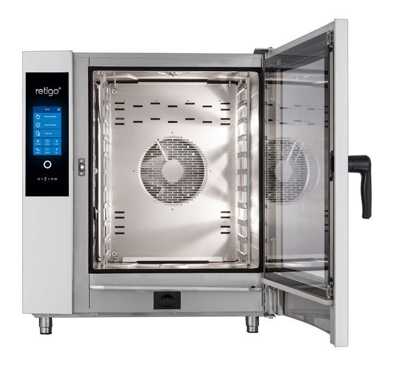
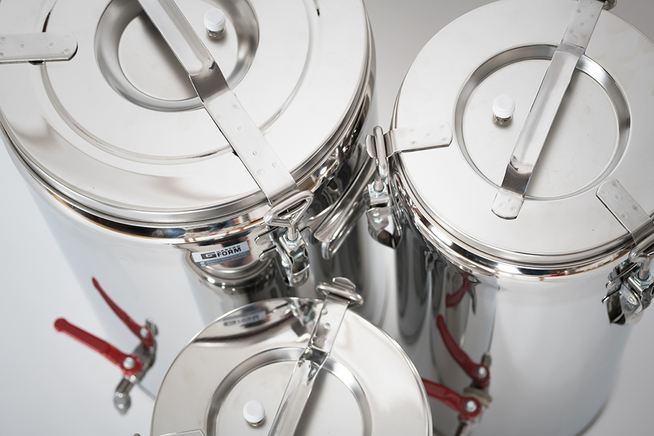
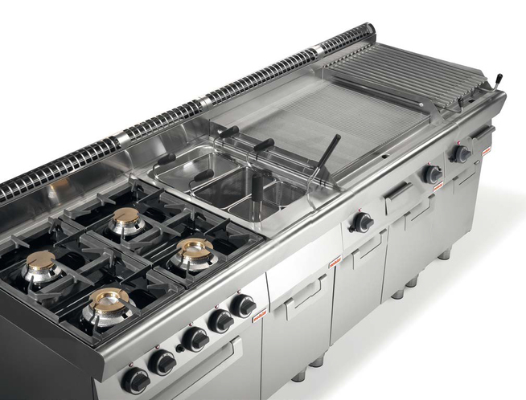
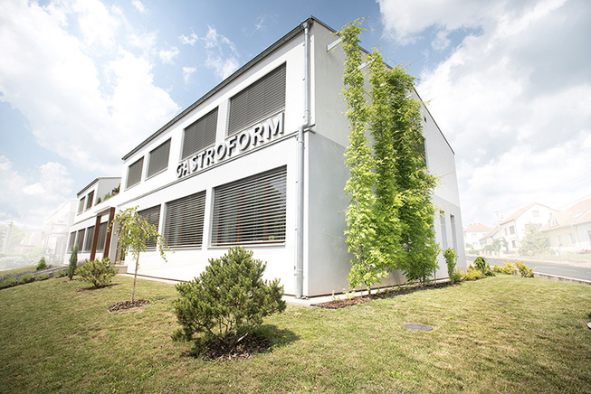
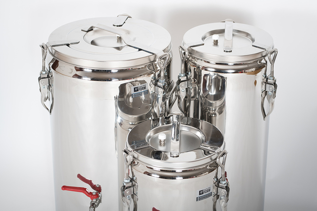
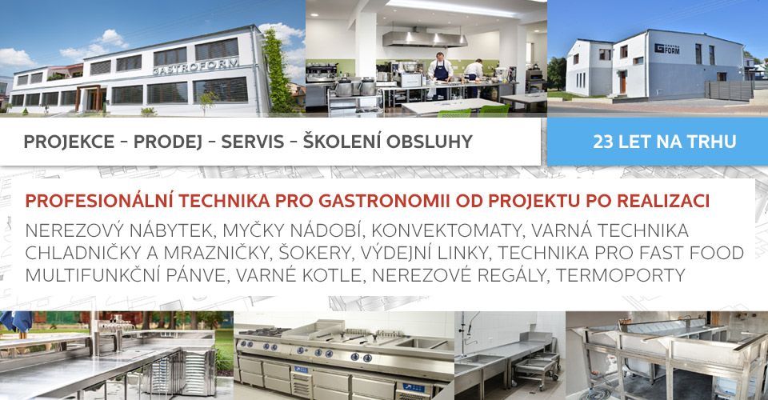
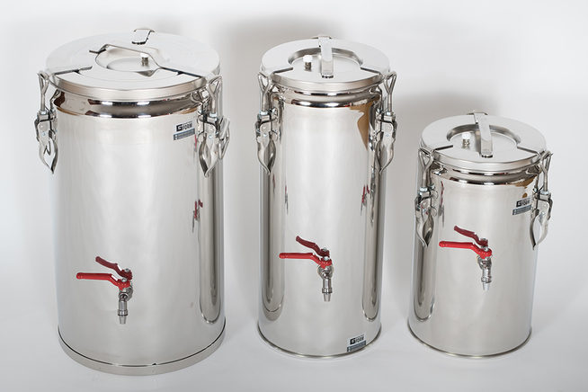
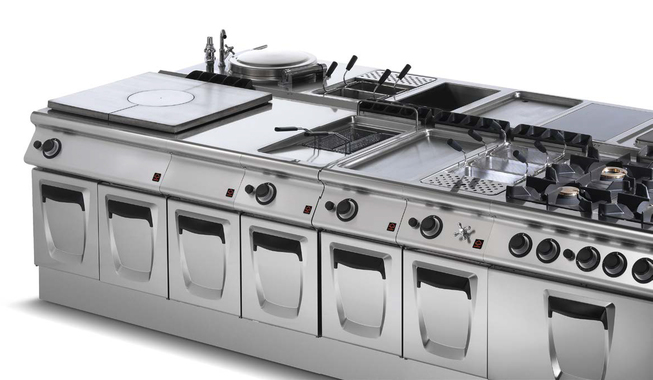

Průmyslová gastro technika a nerezová výroba pro nejnáročnější velkokuchyně
Navrhujeme, vyrábíme a dodáváme komplexní technologické celky pro restaurace, hotely, školy a nemocnice. Špičkové konvektomaty, varné ostrovy, šokové chlazení a nerezový nábytek na míru dle norem HACCP.

Spolehlivý partner pro profesionální gastronomii
Společnost GASTROFORM, s.r.o. působí na trhu gastro technologií od roku 1998. Naším cílem není pouhý prodej krabicových spotřebičů, ale komplexní inženýrské řešení gastro provozu – od optimalizace technologických toků a úspor energií až po finální montáž a servisní péči.
Ve vlastních výrobních prostorách zpracováváme prvotřídní nerezovou ocel AISI 304 pro gastro nábytek, digestoře a varné bloky přesně na centimetr podle stavebních dispozic kuchyně.
Klíčové technologické parametry
| Materiálová norma | Nerezová ocel AISI 304 (ČSN 17 240, DIN 1.4301) |
| Hygienické provedení | Krytí IPX5, zaoblené vnitřní rohy R10/R15, HACCP |
| Energetická účinnost | Ekologická chladiva R290, rekuperace tepla varných bloků |
| Servisní pokrytí | Brno, Praha a celá ČR prostřednictvím vlastních servisních vozů |
Technologický katalog gastro zařízení
Každá kategorie obsahuje ověřené parametry pro dimenzování profesionálních provozů.

Kombinované konvektomaty a varné ostrovy
Špičkové multifunkční parní konvektomaty, varné kotle, sklokeramické a indukční sporáky, modulární i monoblokové varné ostrovy pro profesionální provozy.

Zakázková nerezová výroba a mycí linky
Zakázková výroba nerezového gastro nábytku na míru prostoru – pracovní stoly, dřezy, mycí linky, barové pulty, digestoře a odsávací zákryty s osvětlením.

Průmyslové chlazení, šokery a výrobníky ledu
Kompletní chladicí a mrazicí technika pro gastronomii – chladničky Liebherr, výrobníky ledu Simag a Hoshizaki, šokové zchlazovače a zmrazovače Sincold, cukrářské vitríny Infrico.

Projekce gastro provozů, výdej stravy a servis
Kompletní technologické projekty gastro provozů dle norem HACCP, dodávka výdejních systémů, přepravy stravy (termoporty) a nepřetržitý servis 24/7.
Od technického výkresu po záruční hotline
Technologická projekce gastro
Zpracování 2D/3D dispozic, optimalizace toku surovin, návaznost personálu a detailní projekt napojovacích bodů pro vodoinstalace, odpad a elektroinstalaci.
Výroba & Dodávka zařízení
Koordinace dodávek technologií a vlastní výroba nerezových komponentů s přísnou výstupní kontrolou jakosti a bezpečnosti.
Montáž, revize & zaškolení
Odborná instalace certifikovanými techniky, výchozí revizní zprávy pro plyn a elektřinu a praktické zaškolení kuchařského týmu.
Záruční & pozáruční servis 24/7
Rychlý zásah techniků s plně vybavenými servisními vozy, originální náhradní díly skladem a pravidelné profylaktické prohlídky.
Technologie prověřené v ostrém kuchyňském provozu



Konzultace gastro provozu & Servis
Domluvte si osobní schůzku nebo získejte okamžitou nabídku technologií pro vaši kuchyni.
Ondrova 159/9, Kníničky, 635 00 Brno
+420 603 821 268 (mobil / servis)
marketing@gastroform.cz
Technická poptávka / Konzultace
Specifikujte požadavky na zařízení nebo rekonstrukci. Náš technolog vás kontaktuje do 24 hodin.